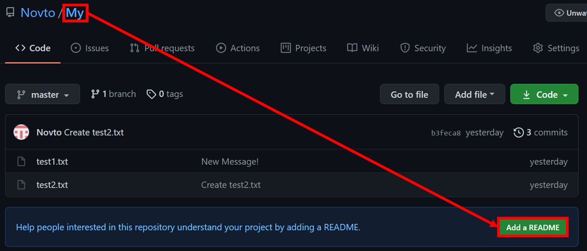
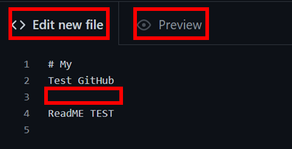
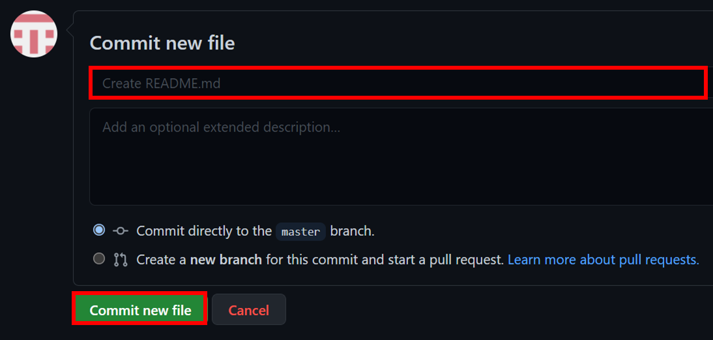
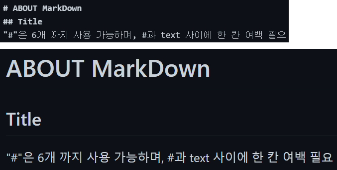
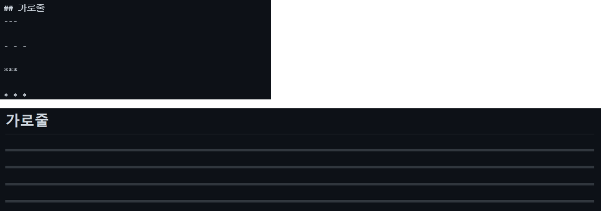
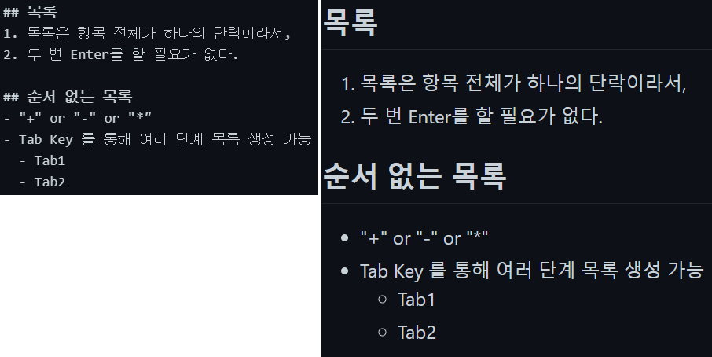
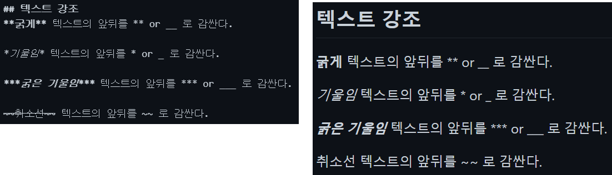
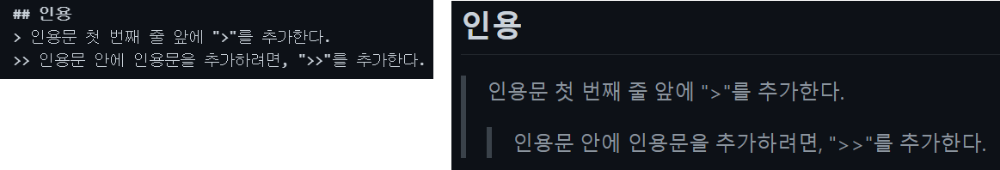
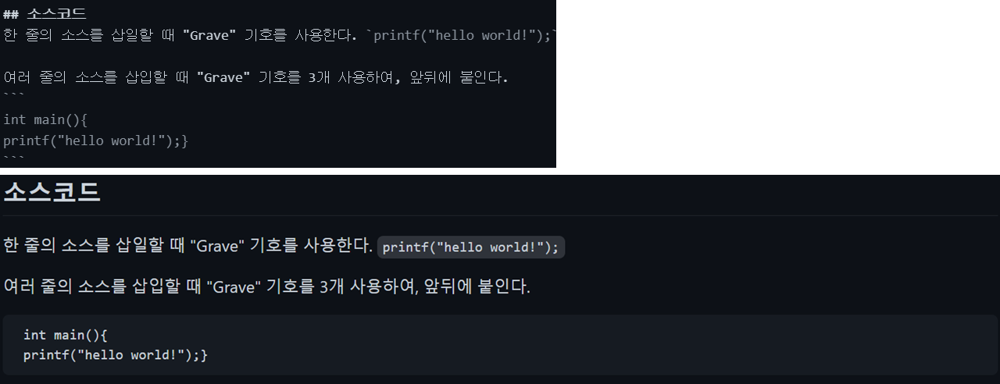

* 다음 포스팅은 깃허브(GitHub)의 사용방법에 대하여 정리한 것으로, 개인적인 공부 기록용으로 작성한 글 이기에 잘못된 내용을 포함하고 있을 수 있습니다.
* Git 관련 내용에 대한 이해가 부족하신 분은 Git 카테고리의 글을 먼저 읽고 GitHub 포스팅을 읽어 주세요.
[목차]
#1 README?
#2 MARKDOWN(마크다운) 문법
-2.1 제목 #
-2.2 가로 줄
-2.3 목록
-2.4 텍스트 강조
-2.5 인용
-2.6 소스코드
-2.7 링크
[목표]
- README 파일에 대한 정의와, MARKDOWN 문법에 대한 내용을 이해한다.
#1 README?
README 파일이란 자신의 저장소를 편하게 살펴볼 수 있도록 작성한 안내문이다. 마크다운(markdown) 문법을 사용하기에, 확장자는 .md를 사용하며 단순 텍스트 뿐 만 아니라 여러가지 스타일을 적용할 수 있다.
README 파일을 제작할 저장소로 이동한 뒤, 첫 화면에 보이는 [Add a README] 버튼을 클릭한다.

[<> Edit new file] 항목은 텍스트 편집기로 원하는 내용을 작성한다. 단, 줄바꿈을 할 때는 [ENTER]를 2번 눌러서 한 라인을 비워 두어야 한다.
[Preview] 항목은 작성한 README 파일의 결과화면을 미리 보여준다.

README 파일의 내용을 작성했다면, 하단에 원하는 커밋메시지를 적고 [Commit new file] 을 클릭한다. (따로 적지 않으면 자동으로 추가된다.)

#2 MARKDOWN(마크다운) 문법
마크다운은 HTML 보다 쉽고 간단하기에, 문서 작성이 편리하다. 하지만, 마크다운을 지원하는 사이트 혹은 프로그램 에서만 사용이 가능 하다는 단점이 있다. README 파일은 마크다운으로 작성 하기에, 기본적인 마크다운 문법에 대해 숙지 하여야 한다.
-2.1 제목
제목은 텍스트 앞에 #을 붙여서 표시하는데, 최대 6개 까지 붙여서 제목의 크기를 결정할 수 있다. #의 크기가 많아질수록 제목의 크기가 작아진다. 주의할 점은, #과 텍스트 사이에 한 칸의 여백을 두어야 한다.

-2.2 가로 줄
가로 줄은 다양한 방법을 사용 가능하다. 아래의 방법 중 원하는 방식을 하나 택하여 사용하면 된다.
---
- - -
***
* * *

-2.3 목록
목록은 순서 있는 목록과, 순서 없는 목록으로 나뉜다. 목록은 항목 전체가 하나의 단락이기에, 한 칸의 여백 라인을 둘 필요가 없으며, "+" or "-" or "*" 중 한개를 선택해 텍스트 앞에 표시하여 순서 없는 목록을 만들 수 있다.
또한 Tab Key 를 이용해 여러 단계의 목록을 생성할 수 있다.

-2.4 텍스트 강조
텍스트의 일부분을 굵게 또는 기울임체로 강조할 수 있다.
* 굵게 : ** 혹은 __ 를 텍스트 앞뒤로 감싼다.
* 기울임 : * 혹은 _ 를 텍스트 앞뒤로 감싼다.
* 굵은 기울임 : *** 혹은 ___로 텍스트 앞뒤로 감싼다.
* 취소선 : ~~ 를 텍스트 앞뒤로 감싼다.

-2.5 인용
인용문 삽입 시 첫 번째 줄 앞에 > 를 추가한다. 인용문 안에 또 다른 인용문을 추가 하고자 할 시 >> 를 추가한다.

-2.6 소스코드
소스코드는 Grave 기호를 사용한다. Grave 기호란 숫자 1 자판 왼쪽에 있는 (`)을 의미한다.
한 줄의 소스를 삽입할 때 는 (`) 를 앞뒤로 붙이고, 여러 줄의 소스를 삽입할 때 는 (```)를 앞뒤에 붙인다.

-2.7 링크
하이퍼 링크는 다양한 형태로 삽입 가능하다.
* <링크주소> : 주소가 그대로 화면에 나타나고, 클릭 시 해당 주소로 이동한다.
* [링크텍스트](링크주소) : 링크 텍스트만 나타나고, 텍스트 클릭 시 해당 주소로 이동한다.
* [링크텍스트](링크주소, "설명") : 링크 텍스트가 나타나고, 링크에 마우스를 올리면 "설명"이 출력된다.